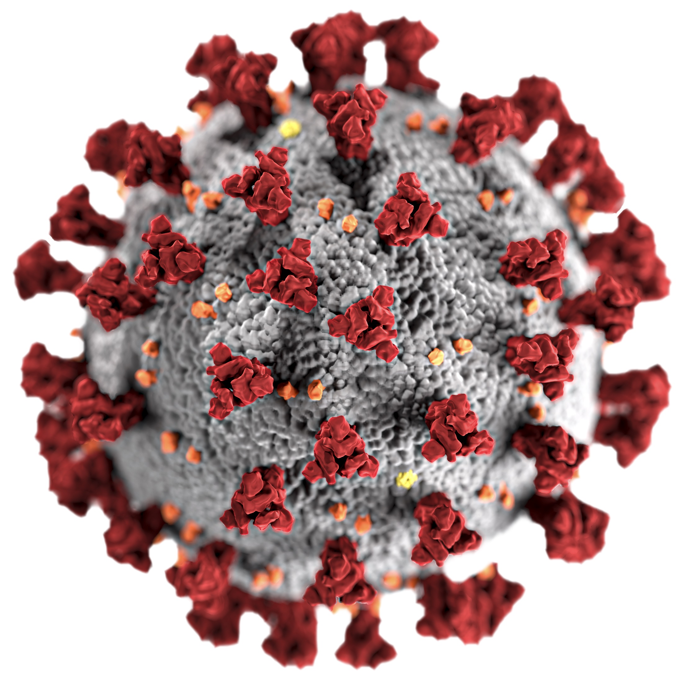

Brianna Heggeseth
Home
Social Justice
JEDI Definitions
Raising Awareness
Classroom Climate
Course Design
Institutional Culture
Academic Hiring
Teaching
Student Resources
Opportunities Outside the Classroom
Datasets
Projects
Datasets
Categories
All
(9)
Arts
(3)
CSV
(4)
Intro
(7)
JSON
(1)
Science
(5)
Social Science
(6)
Upper Level
(7)
Order By
Default
Title
Author
UN Data Catalog
Social Science
CSV
Upper Level
A catalog of data from United Nations that would need to be aggregated to be useful.
UCI Machine Learning Repository
Social Science
Arts
Science
Intro
Upper Level
A list of data sets that are used frequently to test new machine learning algorithms.
OpenData
Social Science
CSV
Intro
A list of City, State, and Federal Open Data sets in the U.S. on safety, housing, energy, economy, and other government data.
Nature Data Repositories
Science
Intro
Upper Level
Data from the publication, Nature.
Mia Collection Data
Arts
JSON
Upper Level
Art collection data of Minneapolis Institute of Art
Kaggle Public Data Repository
Social Science
Arts
Science
Intro
Upper Level
A list of tens of thousands of data sets that are used for machine learning (quality varies).

Johns Hopkins COVID-19 Dashboard Data
Science
Intro
Upper Level
A data repository for the Johns Hopkins COVID-19 Dashboards
IPUMS
Social Science
CSV
Intro
Upper Level
A catalog of microdata (individual-level) from U.S. Census, U.S. Current Population Survey, and international census data
Datasets and Stories
Social Science
Science
CSV
Intro
This is a list of articles with datasets curated for statistics and data science education.
No matching items